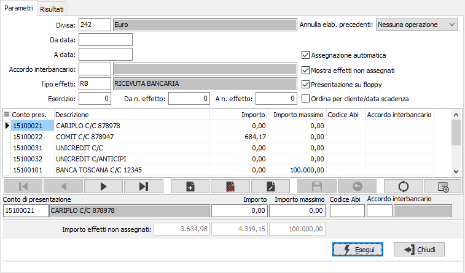
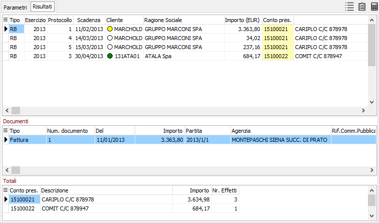
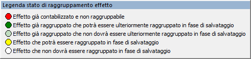
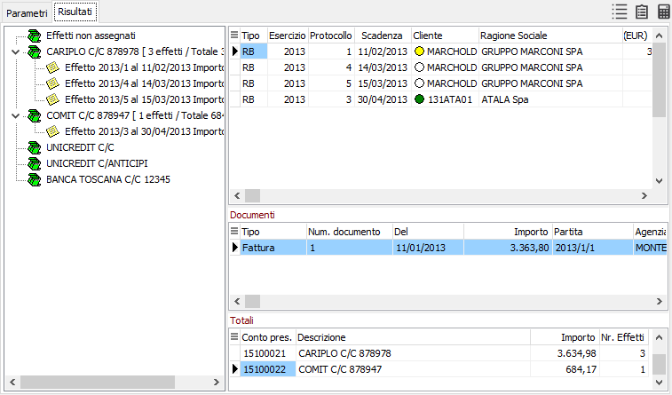
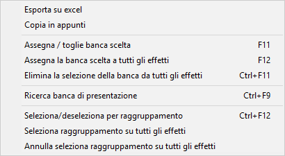

Il pulsante consente di mostrare o nascondere l'ultima sezione della finestra, quella con i totali dei conti di presentazione.
Il pulsante consente di mostrare o nascondere l'ultima sezione della finestra, quella con i totali dei conti di presentazione.Elaborazione distinta effetti
Il programma è utilizzato principalmente per assegnare agli effetti un codice banca di presentazione, ma assolve anche ad altre funzioni quali l’individuazione degli effetti da presentare già assegnati o da assegnare ed il raggruppamento/separazione manuale degli effetti, purché questi non siano già stati contabilizzati in fase di generazione.
La procedura non genera fisicamente le distinte di presentazione effetti, ma lega gli effetti insieme tra loro tramite l'associazione del conto di presentazione; si vanno quindi a formare delle distinte di presentazione logiche che saranno effettivamente generate e numerate solo al momento della stampa definitiva. Fino a quel momento sarà sempre possibile tramite questa procedura modificare i conti di presentazione assegnati, separare o raggruppare effetti, se ci sono le condizioni per farlo.
La procedura si sviluppa su due linguette: la prima dove sono riportati i parametri di selezione e la seconda su cui vengono riportati i risultati delle elaborazioni e sulla quale è possibile effettuare le altre operazioni previste dalla procedura.

DIVISA: codice alfanumerico di 3 caratteri, presente nella tabella Divise, per indicare la divisa degli effetti che si vogliono selezionare. L’indicazione di una divisa è obbligatoria. Sul campo è attiva la ricerca (F9) sulla tabella stessa.
DA DATA: indicare la data di scadenza da cui si intende iniziare la selezione degli effetti per la stampa. Confermando a vuoto la stampa inizia dal primo effetto valido per l'esercizio corrente.
A DATA: indicare la data scadenza con cui si intende terminare la selezione degli effetti per la stampa. Confermando a vuoto la stampa termina con l'ultimo effetto valido.
ACCORDO INTERBANCARIO: Definisce l'accordo interbancario da utilizzare; sul campo è attiva la funzione di ricerca (F9) sulla tabella stessa. Utilizzato, in fase di assegnazione automatica, per controllare la coerenza della banca di appoggio con la banca di presentazione.
TIPO EFFETTO: definisce il tipo di effetto da selezionare. Sul campo è attiva la funzione di ricerca (F9).
ESERCIZIO, DA N. EFFETTO, A N. EFFETTO: è possibile specificare l'esercizio ed il range degli effetti da elaborare.
ASSEGNAZIONE AUTOMATICA: flag per rendere operativa, contestualmente alla selezione, anche l’assegnazione automatica della banca di presentazione agli effetti privi di assegnazione. L'assegnazione avviene, se non specificato l'accordo interbancario, in base al codice ABI di ciascuna banca, altrimenti in base all'accordo interbancario. Valori ammessi: vuoto = non effettua alcuna assegnazione, spunta = effettua l’assegnazione della banca di presentazione indicata.
MOSTRA EFFETTI NON ASSEGNATI: flag per rendere operativa, contestualmente alla selezione, la visualizzazione degli effetti privi di assegnazione. Valori ammessi: vuoto = non seleziona gli effetti privi di assegnazione, spunta = seleziona gli effetti privi di assegnazione.
PRESENTAZIONE SU FLOPPY: flag per specificare il tipo di distinta da presentare. Valori ammessi: vuoto = distinta per presentazione cartacea, spunta = distinta per presentazione su floppy o tramite home banking.
ORDINA PER CLIENTE/DATA SCADENZA: se spuntato i dati elaborati saranno visualizzati ordinati per cliente e data scadenza.
ANNULLA ELAB. PRECEDENTI: definisce se, per gli effetti selezionati, devono essere annullate eventuali assegnazioni fatte precedentemente. Sono previste tre ipotesi:
Nessuna assegnazione: non viene eseguita nessuna operazione di inizializzazione del conto di presentazione;
Elimina assegnazione: al conto di presentazione viene assegnato il valore vuoto;
Assegnazione originale: al conto di presentazione viene assegnato il conto di presentazione prelevato dal cliente (come in fase di generazione effetti).
BANCA DI PRESENTAZIONE: codice alfanumerico di 8 caratteri, presente nella tabella Conti correnti, per indicare la banca di presentazione della distinta. Sul campo è attiva la viste F9 sulla tabella stessa.
IMPORTO MASSIMO: campo numerico per inserire l’eventuale importo massimo della distinta al fine di non superare la disponibilità residua del castelletto per la banca indicata. L’indicazione di un valore non è obbligatoria.
Alcuni effetti possono contenere, già al momento della generazione degli effetti stessi, un codice banca di presentazione precedentemente assegnato. Pertanto in portafoglio, prima dell’elaborazione di una distinta, potrebbero esistere effetti privi di assegnazione ed effetti già assegnati a banche diverse. Ciò risulta di particolare importanza perché, indicando in sede di elaborazione di una distinta una specifica banca di presentazione verranno selezionati solo gli effetti già assegnati a tale banca ed eventualmente quelli privi di assegnazione.
I campi successivi sono utilizzati come filtro di ricerca sulla banca assegnata all'effetto:
CODICE ABI: Codice ABI della banca di presentazione inserita.
ACCORDO INTERBANCARIO: indica l'accordo interbancario utilizzato; sul campo è attiva la funzione di ricerca (F9) sulla tabella stessa.
Il pulsante Inserisci conti correnti consente di inserire in modo automatico i conti correnti bancari eventualmente già presenti per gli effetti che rientrano nella selezione. Viene riportato nell'apposita casella l'importo totale degli effetti assegnati alla banca, il totale generale ed il totale degli effetti non generati.
Dopo aver indicato la divisa, le date di scadenza per la presentazione, le banche di presentazione scelte, il tipo di effetti ed aver validato il flag “Mostra effetti non assegnati”, si conferma la selezione tramite il pulsante Esegui. Viene quindi visualizzata la sezione video “Risultati”, che presenta l’elenco degli effetti selezionati, ovvero quelli già assegnati alla banca di presentazione indicata e quelli privi di assegnazione. In questa finestra è evidenziato per ogni effetto il tipo, l'esercizio ed il protocollo, il cliente con l'indicazione dello stato di raggruppamento, l'importo dell'effetto ed il conto di presentazione se già presente. Per ogni effetto sono visibili nella seconda sezione della finestra i riferimenti al documento, o ai documenti se l'effetto è raggruppato, e il riferimento alla commessa pubblica, se attiva la gestione della Normativa Antimafia. Nell'ultima sezione della finestra sono visibili i totali per conto di presentazione.

In alto destra sono presenti dei pulsanti di utilità, vediamoli in dettaglio:

 Il pulsante consente di attivare e disattivare la legenda dello stato di raggruppamento dell'effetto, rappresentato dal cerchietto colorato di fianco al codice del cliente. Ogni colore corrisponde ad un diverso stato di raggruppamento, ad esempio un effetto già contabilizzato avrà un cerchietto rosso che indica che l'effetto non potrà essere raggruppato.
Il pulsante consente di attivare e disattivare la legenda dello stato di raggruppamento dell'effetto, rappresentato dal cerchietto colorato di fianco al codice del cliente. Ogni colore corrisponde ad un diverso stato di raggruppamento, ad esempio un effetto già contabilizzato avrà un cerchietto rosso che indica che l'effetto non potrà essere raggruppato.
Il pulsante consente di attivare e disattivare la rappresentazione grafica dei conti di presentazione; nel pannello di sinistra vengono riportati i conti di presentazione utilizzati ed i relativi effetti associati, riportando per ogni conto il totale degli effetti e degli importi; è presente anche una voce relativa agli effetti non assegnati. Da questo pannello è possibile spostare un effetto da un conto all'altro oppure sul non assegnato semplicemente cliccando con il mouse e trascinando la riga dell'effetto.

Il pulsante consente di mostrare o nascondere l'ultima sezione della finestra, quella con i totali dei conti di presentazione.

Cliccando con il pulsante destro del mouse sulla griglia degli effetti è possibile richiamare il menù contestuale relativo alle funzioni disponibili, per le quali è previsto anche il relativo tasto funzione. Sulla colonna “Conto presentazione” in corrispondenza di un effetto è possibile, nel caso sia stata indicata una sola banca di presentazione utilizzando il tasto funzione F11, o anche ricercando tramite le funzioni di ricerca (CTRL+F9), assegnare la banca di presentazione, anche modificando quella eventualmente già esistente. Contestualmente nella sezione dei totali si incrementa il totale della distinta ed il numero degli effetti, per la banca interessata. Non è ovviamente obbligatorio assegnare tutti gli effetti. Utilizzando il tasto F12 è possibile selezionare una banca da assegnare a tutti gli effetti presenti, anche quelli che eventualmente abbiano già una banca assegnata; con i tasti CTRL+F11 è possibile togliere la banca a tutti gli effetti. Dopo aver completato l’assegnazione agli effetti che ne erano privi (ed aver eventualmente deselezionato qualche effetto che non si desidera presentare). Con i tasti CTRL+F12 è possibile selezionare/deselezionare un effetto per il raggruppamento (se si seleziona un effetto raggruppato sarà effettuata la separazione), ci sono poi nel menù due voci per selezionare tutti gli effetti per il raggruppamento o togliere la selezione a tutti gli effetti. Al momento del salvataggio gli effetti selezionati per il raggruppamento saranno valutati e dove possibile sarà effettuato il raggruppamento/separazione.Occorre confermare l’elaborazione della distinta tramite il tasto funzione F10 o premendo il bottone Salva.